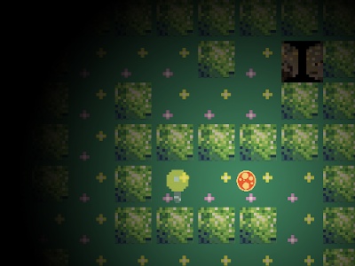
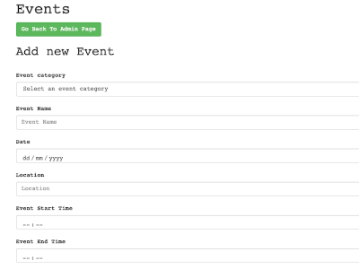
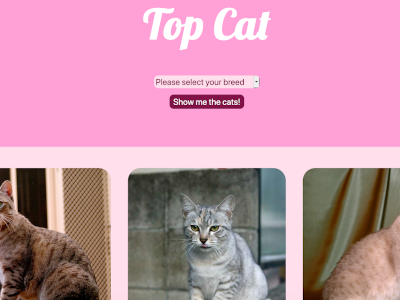

Portfolio

GitHub link
Gloominate
A Javascript game made for the Oct 2019 Ludum Dare Game Jam. I worked with a small team of former students to build a game over a weekend. We used the Javascript library "Phaser 3" to help us build the game. It was a great experience to learn a new tool and produce something enjoyable in limited time.

GitHub link
Mayden Academy Portal
A portal for Mayden Academy to manage their events, hiring partners, users etc. We used the Slim framework for PHP using a MVC structure to add new features to the project and fix bugs.

GitHub link
Who's a good puppy?
A Javascript game where you stroke a dog from head to tail avoiding brushes along the way and and not letting your cursor off the dog. Built using ES5 with Jquery and CSS animations.

GitHub link
Mayden Academy Aptitude Test
A project working on legacy code from previous students on a larger code base. We used Gulp as a task runner to compile SASS. For our JS we used ES6.

GitHub link
Top Cat
A app that displays cats by breed from a MySQL database using PHP 7. An API scrape is used to create and populate the database..